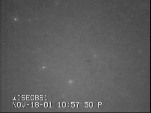
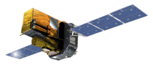
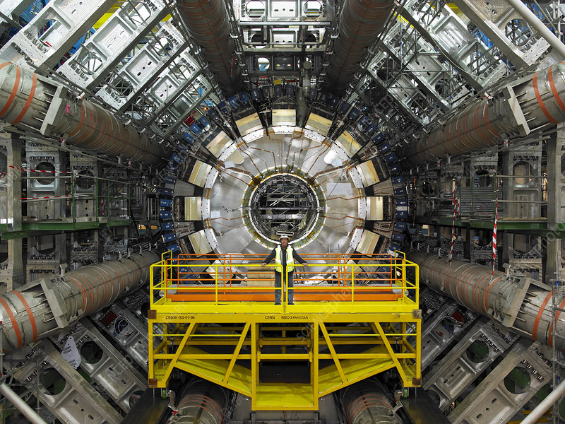

Some examples of some public or media engagements
I was an expert science consultant for Time magazine and The Independent for the Leonids meteor shower. The Leonid meteor shower, is an annual celestial event, is best viewed in mid-November when Earth passes through the debris left by Comet Tempel-Tuttle. This shower is known for its bright, fast-moving meteors that radiate from the constellation Leo. The fast moving Leonids meteoris provide a spectacular display with the chance to witness up to 15 meteors per hour under clear skies.
The ESA SPI-Integral experiment, part of the International Gamma-Ray Astrophysics Laboratory (INTEGRAL), is designed to perform high-resolution spectral analysis of gamma-ray sources in space. The Spectrometer on INTEGRAL (SPI) is highly sensitive and can detect gamma rays in the energy range of 20 keV to 8 MeV with exceptional energy resolution. This allows scientists to study gamma-ray point sources and extended regions, providing insights into some of the most energetic and violent phenomena in the universe, such as supernovae, black holes, and neutron stars. The data collected by SPI helps in understanding the processes that produce gamma rays and the nature of the sources emitting them. Having done a lot of recent work with the SPI-Integral dataset searching for new particles and dark matter, the European Space Agency invited us to contribute to one of their press release for their "INTEGRAL picture of the month" which you can find here.
Article based on interview with Careers with STEM. The article was to motivate new students to enter the field of particle physics and summarise benefits of constructing of the high-luminosity Large Hadron Collider and next generation particle colliders.
